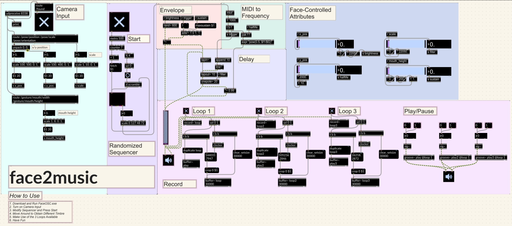

Tags: Max/MSP, Sequencer, Karplus-Strong, FaceOSC, Loop
Face2Music is a face-controlled sequencer powered by FaceOSC, a standalone desktop program that tracks facial features via camera, such as the coordinate of the user’s face relative to the screen, and transmits them over Open Sound Control (OSC). Specifically, the x position modulates the note’s brightness, the y position influences resonance, the distance from the camera adjusts the filter cutoff, and the mouth height determines sustain. The patch employs a randomized sequencer with an eight-note pool, reshuffled every fourth repetition, generating dynamic musical patterns. Additionally, the patch integrates a loop module facilitating the recording, playback, and pausing of three independent tracks.
Making music production accessible to beginners has always been one of my academic endeavors. This passion was sparked during my time volunteering as a music teacher for children at a local community center. Many of the kids, aged 7 to 8, struggled to connect with music and perceive its universality and possibility, much like I did at their age. Growing up in China, my exposure to music was limited to classical and pop, but hearing Guns N' Roses’ "Welcome to the Jungle" revealed how diverse and powerful music could be. This inspired me to create tools that lower barriers to music production, enabling children and beginners to explore their creativity without technical limitations, which is why Face2Music exists.
To make this idea work—using facial features to generate music—I first received messages from FaceOSC, scaled them to a proper range, and stored them in variables. While additional features like eyebrow height and nostril flare could be extracted, I selected the most readily adjustable parameters for optimal user interaction.
The randomized sequencer is implemented via a multislider, reshuffled using zl.scramble, with each note triggered by a metro set to 500 ms. After converting the notes to MIDI, they are routed to a Karplus-Strong algorithm to simulate realistic string sounds. This begins with a buffer of random noise using “rand~ 600” to emulate the initial energy of a pluck, followed by a onepole low-pass filter through averaging and feedback. Over time, this process replicates a real string’s decay, evolving from a complex, harmonic-rich sound to a simpler waveform that eventually fades out.
The resulting audio signal is played and sent to the patch’s looping and playback section, which enables dynamic audio manipulation through three independent loops (Loop 1, Loop 2, Loop 3), a Play/Pause control, and a Record function. Each loop uses a buffer~ to store audio, with a record~ object capturing sound when toggled via sel 0 1, while clocker ensures synchronized timing. The Play/Pause section uses three groove~ objects to play audio from the buffers, allowing users to start or pause the loops seamlessly while the Record section captures the overall output into a buffer~ loop.